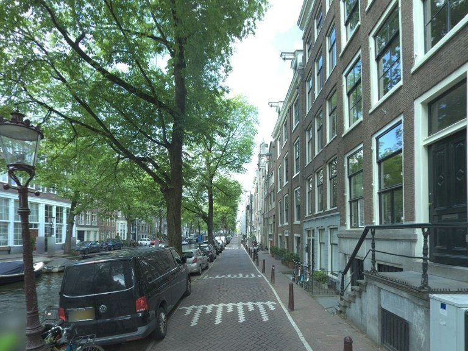
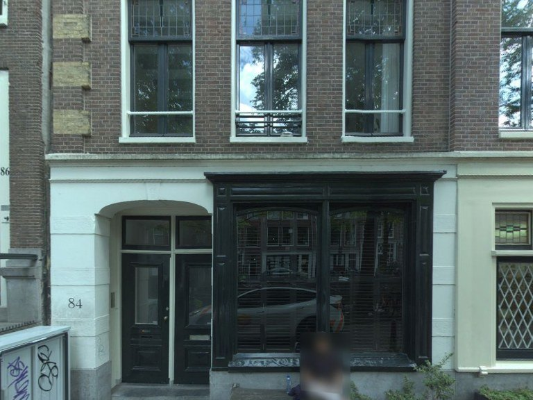
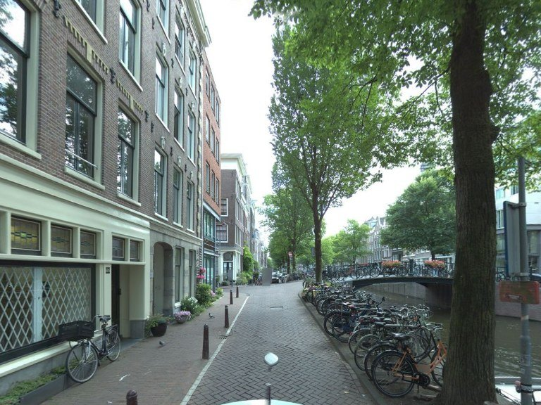
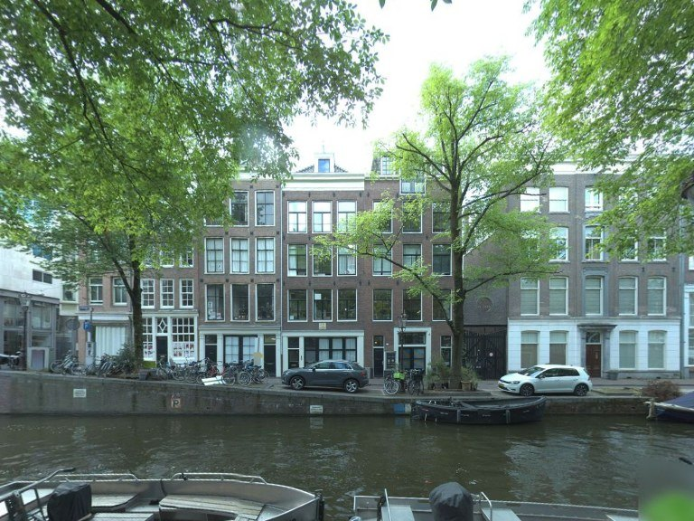

360° panorama, 4000 × 2000 px

front
right
back
leftHover a feature for the model's evidence.
01 / 07
24,775 panoramas.
From the City's camera car, June to October 2025: at most one per 50 m of street.
02 / 07
Into one street.
The Bloemgracht, on 3 July 2025.
03 / 07
One 360° image.
This is what the camera records: the whole street at once.
04 / 07
Cut into four views.
Ahead, right, behind, left. Four per panorama: 99,100 in all.
05 / 07
Nineteen questions per view.
An open model (Qwen3.5-4B) answers each with present, absent or not visible, and its evidence.
06 / 07
Checked by a larger model.
A 27B model re-read 500 views. Eight features agree well enough to map.
κ 0.77agreement on presence, all features
07 / 07
Street by street.
19,410 street segments: green view from segmentation, or walkability from the team's own perception model.